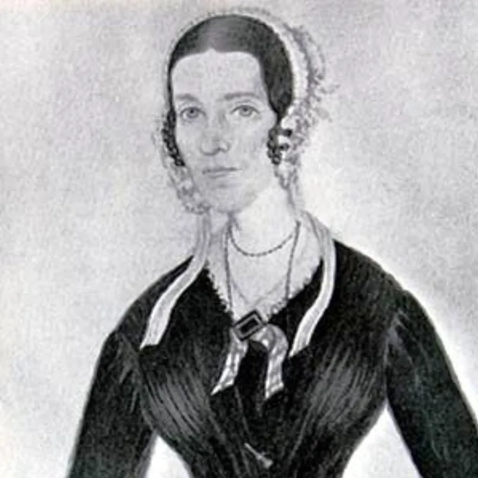
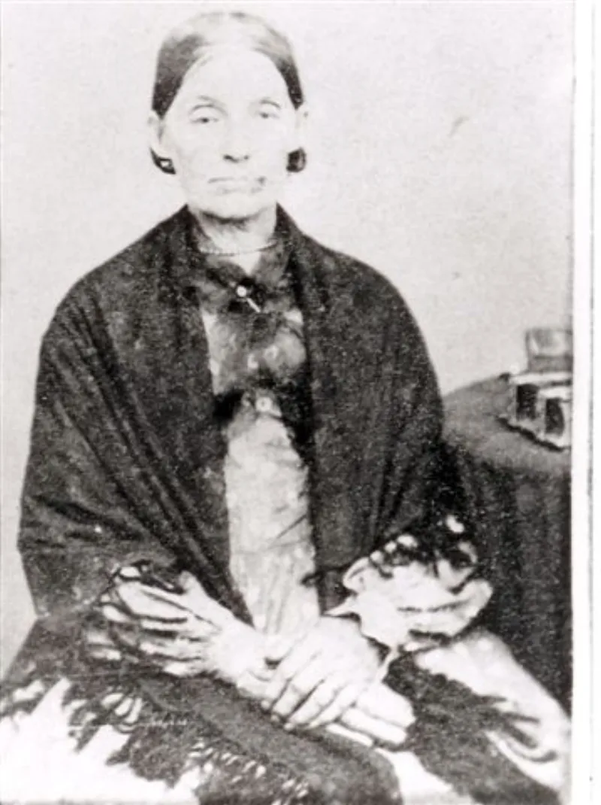

Their own church publications admit these facts. You can make this point from LDS sources alone.
Joseph Smith was sealed to roughly 30 to 40 women. That number is not a critic's.
The Gospel Topics essay says "careful estimates put the number between 30 and 40."
Helen Mar Kimball, sealed "several months before her 15th birthday." She was 14. And Fanny Alger, about 16, a servant in the Smith home.
In a letter dated 21 January 1838 he called the Alger matter "a dirty, nasty, filthy scrape." Cowdery was one of the Three Witnesses. He was cut off from the church soon after.
The charge was falsely insinuating that Smith was guilty of adultery.
The church grants the marriages. It frames them as a commanded restoration of Old Testament plural marriage, which Smith resisted.
Brian Hales argues Helen's sealing was likely "eternity only" and dynastic — a link between the Kimball and Smith families, with no evidence of a marital relationship. She went on living with her parents.
Marriage at 14 to 16 was legal, and not unheard of on the frontier in the 1840s. And on later accounts Fanny Alger was a marriage with her parents' consent, not an affair.
They admit this themselves. The count, the 14-year-old and the secrecy are all in the church's own essay.
Their answers go to what it meant, not to whether it happened. Eternity-only is possible and cannot be proved.
And frontier custom does not explain why it was kept from Emma and from the church.
"The church's own essay says thirty to forty. Have you read it?"


The church grants the count, and Hales reads Helen's sealing as a family link only.
The church acknowledges the marriages. It frames them as a commanded restoration of Old Testament plural marriage, which Smith resisted. That is the setting of the accounts of an angel with a drawn sword.
Brian Hales argues that Helen Mar Kimball's sealing was likely 'eternity only' and dynastic, linking the Kimball and Smith families. There is no evidence of marital relations, and Helen went on living with her parents.
Marriage at 14 to 16, while young, was legal and not unheard of on the 1840s frontier.
And on the later accounts, Fanny Alger was a marriage with her parents' consent rather than an affair. Cowdery's words are those of an estranged critic.
They admit this: their answers go to what it meant, not whether it happened.
The core facts are conceded in the church's own essay. Between 30 and 40 wives. A bride of 14. And secrecy from Emma and from the church.
The replies go to what it meant, not to whether it happened. Eternity-only sealings. A dynastic purpose.
The eternity-only reading of the Kimball sealing is possible but cannot be proved. And frontier custom does not explain the concealment.
The claim as stated is documented by the institution itself.